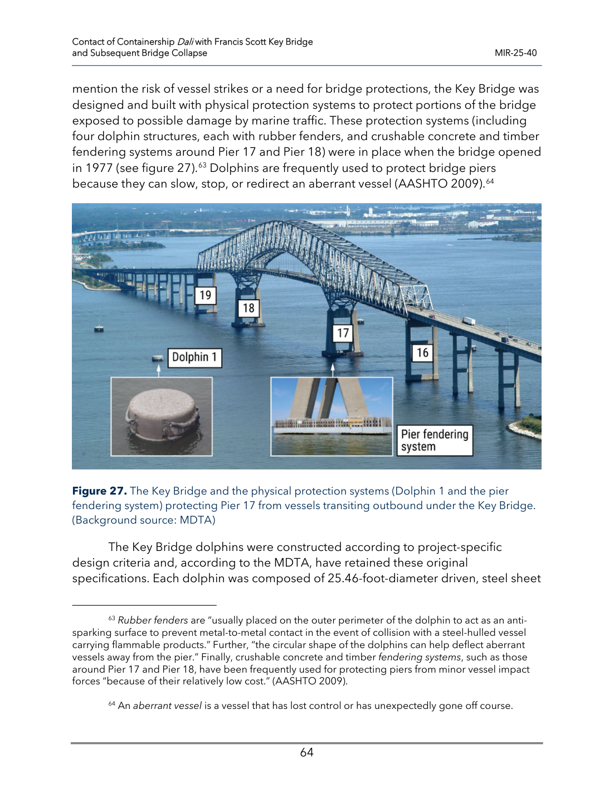
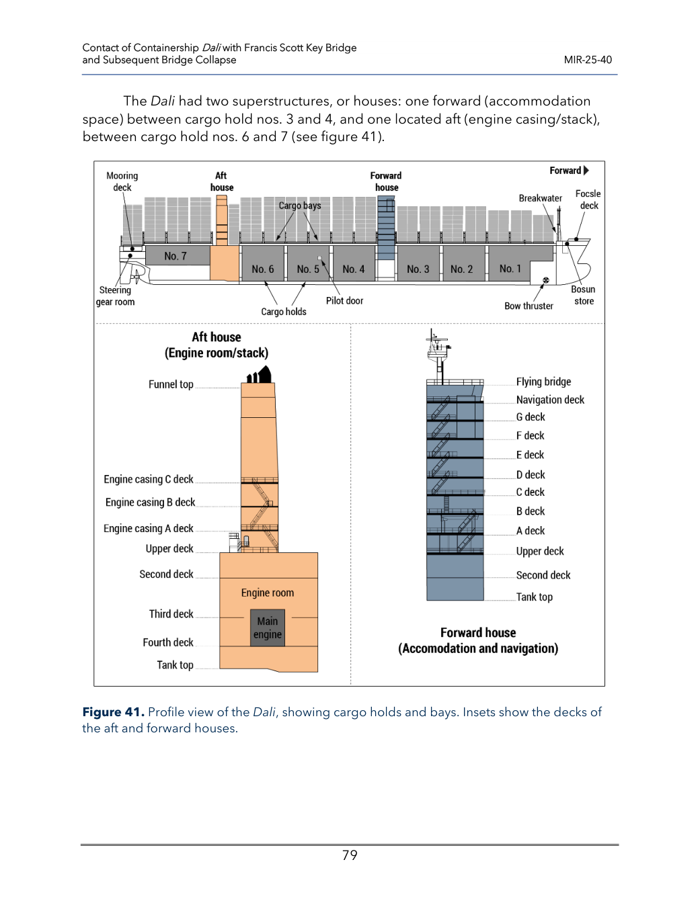
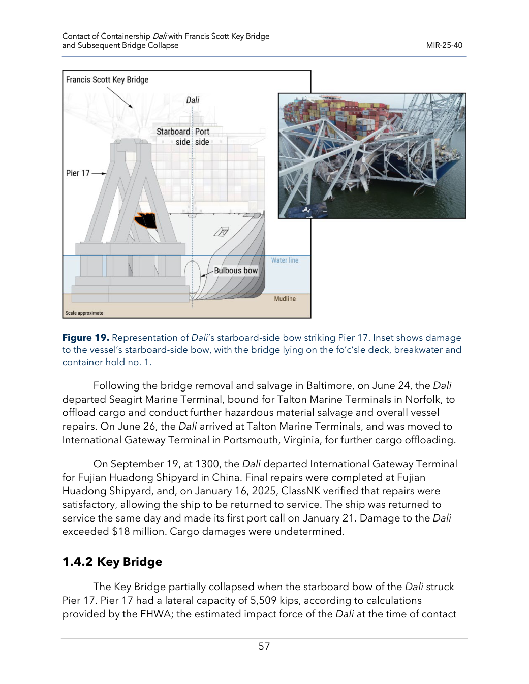

ORIGINAL RECORDINGS / 与模型核对
打开原录像，核对动作有没有做对
重点看这三次方向变化
- 主跨向受撞墩侧下沉时，北端是否向上翘离支承？
- 北端何时回落并再次接触19号墩？
- 后续引桥依次落下后，16、18、22号墩是否仍留下？
右侧原帧来自NTSB事实报告中的NRP监控。灰白画面是热像，不能把亮区画成爆炸；模型保留夜景，构件照明以看清形态为目的。
原文件画面时钟与调查校正时钟可能不同。这里提供首次接触帧对齐；未冒充已自动校准每个视频。模型与实拍仍有细部差异，未声称逐像素相同。
原帧页码、裁切与时间依据01 / THREE SPANS, ONE CONTINUOUS SYSTEM
先看事故前的真实构造，再看模型



秒针上的记录，和课堂的慢动作分开看
- 01:25:00第一次低压失电
- 01:28:22两端停止新车进入
- 01:29:09 · t = 0船艏开始接触 17 号墩
- 01:29:15 · +6 s18 跨开始垮塌
- 01:29:22 · +13 s17 号墩倒塌
- 01:29:24 · +15 s20 跨垮塌
- 01:29:27 · +18 s21 跨垮塌
- 01:29:28 · +19 s22 跨垮塌
2024-03-26，当地夏令时 EDT。来源：MIR-25-40 附录 C。模型截取主桥及局部引桥，未把所有桥跨假装完整复刻。支承在墩完全倒下之前已可能严重退化。
电气故障原因动画
NTSB 于 2025-11-18 发布的船舶断电原因动画，不是当晚监控录像。打开官方原视频。网络播放器需联网，未在本轮逐帧核验播放。 原视频为外部资料，三维仿真无需载入它。
事故后的航空实拍
NTSB 官方航空实拍，观察残存桥墩、落梁及船位。原始入口。与调查动画身份不同；事故当晚监控本页不冒充持有原始版权文件。
事故梳理 · 5W2H
| What / 何事 | Dali 撞击主墩，原三跨连续钢桁架及部分引桥垮塌。 |
|---|---|
| When / 何时 | 2024-03-26 凌晨；01:29:09 开始接触。 |
| Where / 何处 | 美国马里兰州巴尔的摩，Patapsco River，Francis Scott Key Bridge 的 17 号墩。 |
| Who / 谁 | 出港集装箱船 Dali、桥上施工人员及交通管理人员；6 名道路工人遇难。 |
| Why / 原因 | NTSB 最终认定：一处信号线连接松脱引发电力故障，船舶失去推进和转向能力；恢复时间有限、桥梁风险防护与工人即时警报存在问题。 |
| How / 过程 | 失电 → 偏离航道 → 右舷船艏接触 17 号墩西北柱 → 支承退化 → 连续结构连锁垮塌。 |
| How much / 尺度 | 主跨 365.76 m，两侧各约 219.91 m；船长 299.9 m、宽 48.2 m。船与主跨采用同一米制比例。 |
调查状态：Completed；最终报告 MIR-25-40，封面日期 2025-11-18。核查到 2026-09-23。NTSB 案件页 · 本地官方最终报告